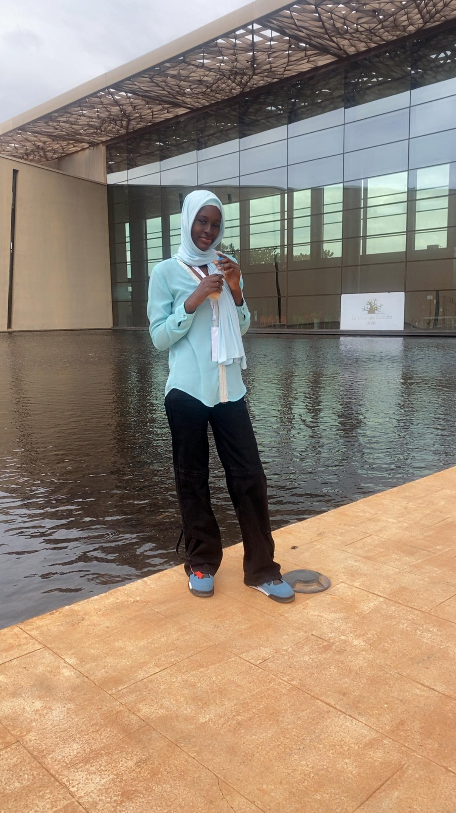
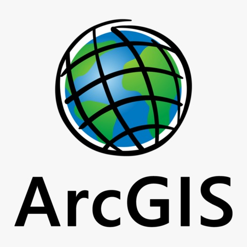
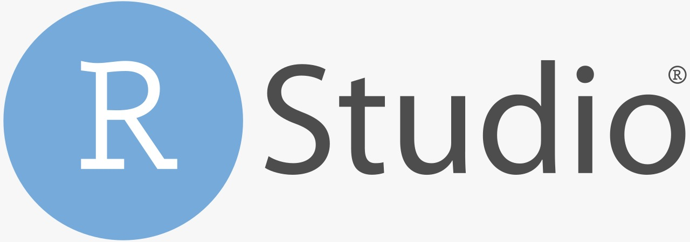
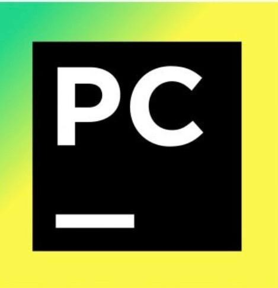
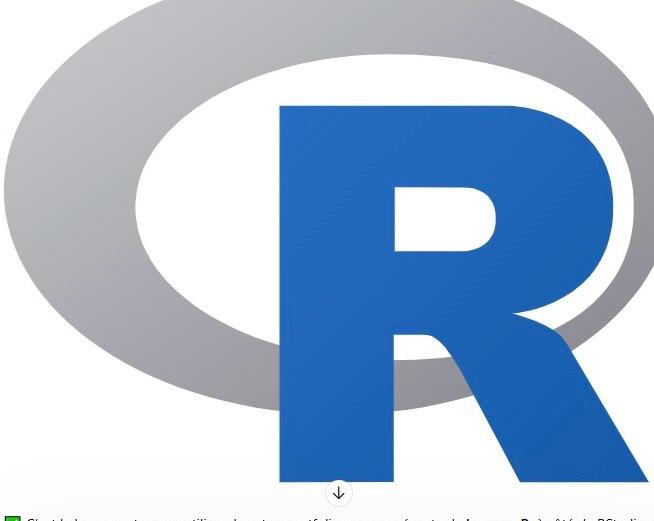
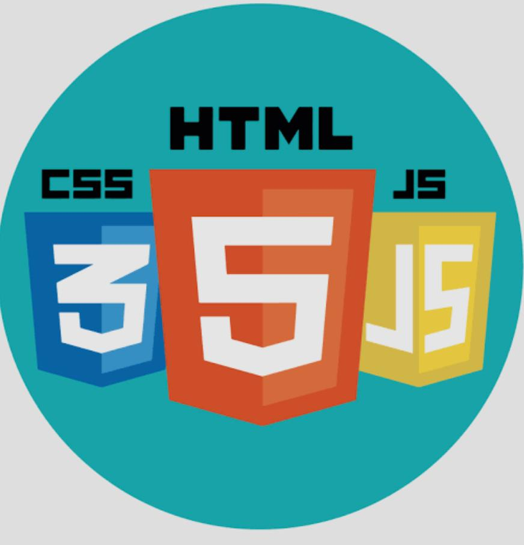
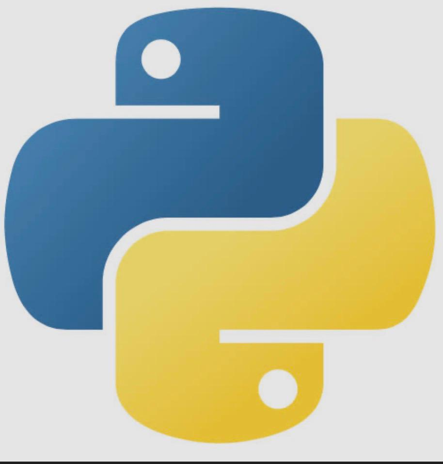

Géomaticienne passionnée par la synergie entre Cartographie et Développement Web. Je conçois des solutions innovantes alliant la rigueur de l'analyse spatiale à la modernité des interfaces web interactives.
Engagez-moiÉtudiante en Licence 2 Géomatique, motivée et rigoureuse, disposant de compétences en systèmes d'information géographique (SIG), cartographie thématique et analytique, ainsi qu'en analyse de données spatiales. Habituée à travailler sur des projets académiques utilisant des outils comme QGIS, ArcGIS et RStudio. Forte motivation pour les domaines de l'aménagement du territoire, de l'environnement et de l'informatique appliquée.
Télécharger CV
Création de sites web modernes et responsifs en utilisant les technologies actuelles du développement web pour offrir des interfaces claires et accessibles.
Création de cartes thématiques et topographiques précises à partir de relevés GPS et données SIG
Utilisation de la géolocalisation pour identifier et cartographier précisément des positions sur le terrain
Analyse et traitement de données à l'aide d'outils statistiques et informatiques






Participation à plusieurs projets académiques réalisés en équipe, notamment une étude sur le trafic routier ainsi que des projets en anglais portant sur des domaines liés à la géomatique, tels que la cartographie et l'arpentage.
2-4 personnes
Projet express
QGIS, Kobotoolbox, Microsoft World, PowerPoint
Analyse des flux de trafic routier dans la ville de Thiès à partir d'une enquête de terrain réalisée par notre équipe.
Principales méthodes et outils d'arpentage, ainsi que leurs applications dans la construction, la cartographie et l'agriculture
Étude de l'impact de la proximité des écoles et des axes routiers sur l'attractivité et la valorisation des terrains dans les quartiers de Thiès.
Thiès, Sénégal
+221 77 849 98 24
ndiaye2005geomatique@gmail.com